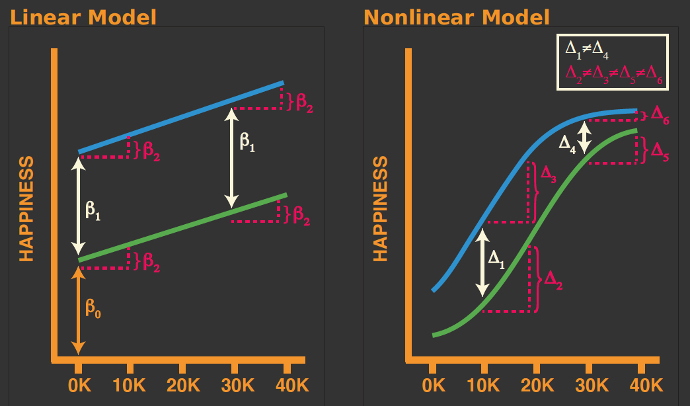

dropout <- read.csv("data/dropout.csv", sep = ";")
dropout$Dropout <- ifelse(dropout$Target == "Dropout", 1, 0)
dropout$Age_star <- scale(dropout$Age.at.enrollment, center = TRUE, scale = FALSE)Multiple Logistic Regression
Overview of Multiple Logistic Regression
Multiple logistic regression extends the simple logistic regression framework to include more than one predictor variable:
- more than one feature (also called the predictors or independent variables),
- one target (also called the outcome or dependent variable).
Multiple logistic regression allows us to model the relationship between a single outcome variable \(Y_i\) and multiple predictors \(X_{1i}, X_{2i}, \dots, X_{pi}\) for each observation \(i = 1, \dots, n\).
Example Data
Again let’s use dropout data.
The Model
The general form of the multiple logistic regression model is:
\[ p(Y_i) = \frac{e^{\beta_0 + \beta_1 X_{1i} + \beta_2 X_{2i} + \dots + \beta_p X_{pi}}}{1 + e^{\beta_0 + \beta_1 X_{1i} + \beta_2 X_{2i} + \dots + \beta_p X_{pi}}} \]
Estimating the Model
The coefficients \(\beta_0, \beta_1, \dots, \beta_p\) are typically estimated by maximum likelihood estimation (MLE), since least squares is not appropriate for binary outcomes.
Implementation in R
In R, we fit a multiple regression model with the glm() function:
fit_mult <- glm(
Dropout ~ Age_star + Debtor,
family = "binomial",
data = dropout
)
summary(fit_mult)
Call:
glm(formula = Dropout ~ Age_star + Debtor, family = "binomial",
data = dropout)
Coefficients:
Estimate Std. Error z value Pr(>|z|)
(Intercept) -0.948869 0.036623 -25.91 <2e-16 ***
Age_star 0.065876 0.004414 14.93 <2e-16 ***
Debtor 1.347617 0.101097 13.33 <2e-16 ***
---
Signif. codes: 0 '***' 0.001 '**' 0.01 '*' 0.05 '.' 0.1 ' ' 1
(Dispersion parameter for binomial family taken to be 1)
Null deviance: 5554.5 on 4423 degrees of freedom
Residual deviance: 5100.5 on 4421 degrees of freedom
AIC: 5106.5
Number of Fisher Scoring iterations: 4Interpretation of Coefficients
So far we have considered two possibilities for interpreting logistic regression results:
- Interpreting the log-odds directly
- Transforming the log-odds into odds
- A probability metric (for a single explanatory variable)
However, as we include more covariates in our model, interpretation becomes more difficult. We can only think about “holding other variable constant” in the log-odds and odds scale. For nonlinear model marginal effects provide us with an intuitive and easy to interpret method for understanding and communicating results.
Marginal Effects
Marginal effects are partial derivatives of the regression equation with respect to each variable in the model for each unit in the data.
Put differently, the marginal effect measures the association between a change in an explanatory variable and a change in the response. The marginal effect is the slope of the prediction function, measured at a specific value of the explanatory variable.
In linear models the effect of a given change in an independent variable is the same regardless of (1) the value of that variable at the start of its change, and (2) the level of the other variables in the model.
In nonlinear models the effect of a given change in an independent variable (1) depends on the values of other variables in the model, and (2) is no longer equal to the parameter itself.
Consider a linear and nonlinear model for happiness as a function of personal spending and a dummy variable indicating whether someone is rich.

A Few Observations
For the linear model: - Whether one is rich or poor does no impact the relationship between happiness and personal spending. - Differences in happiness levels between rich and poor are not dependent on the amount of money one spends.
From the nonlinear model: - Whether one is rich or poor does impact the relationship between happiness and personal spending. - Differences in happiness levels between rich and poor are dependent on the amount of money one spends.
Marginal Effects in R
To look at marginal effects we will use the marginaleffects package.
# install.packages("marginaleffects")
library(marginaleffects)For example, let’s look at the impact of Debtor on the probability of dropping out.
marginaleffects::plot_predictions(
fit_mult,
condition = c("Debtor"),
conf.int = TRUE
)What if we were interested in the relationship between Age and Debtor on the probability of dropping out.
marginaleffects::plot_predictions(
fit_mult,
condition = c("Age_star","Debtor")
)Thus, marginal effects provide a way to understand and communicate the results of nonlinear models.
Assessing Model Accuracy
To assess how accurate our models are we will go back to our cross-validation framework. First, let’s split our data into test and train sets.
set.seed(123)
dropout$Dropout <- as.factor(dropout$Dropout)
dropout$Age.at.enrollment <- NULL
split <- initial_split(
dropout,
prop = 0.7,
strata = "Dropout"
)
dropout_train <- training(split)
dropout_test <- testing(split)Now, let’s consider three different models we may want to compare:
- Model 1: A simple logistic regression using only Age_star as a predictor.
- Model 2: A multiple logistic regression using Age and Debtor as predictors.
- Model 3: A full model using all available predictors.
Model 1
library(caret)
# Train model using 10-fold cross-validation
set.seed(123) # for reproducibility
(cv_model1 <- train(
form = Dropout ~ Age_star,
data = dropout_train,
method = "glm",
family = "binomial",
trControl = trainControl(method = "cv", number = 10)
))Generalized Linear Model
3096 samples
1 predictor
2 classes: '0', '1'
No pre-processing
Resampling: Cross-Validated (10 fold)
Summary of sample sizes: 2786, 2787, 2786, 2786, 2787, 2787, ...
Resampling results:
Accuracy Kappa
0.6824965 0.1098779Model 2
# model 2 CV
set.seed(123)
(cv_model2 <- train(
form = Dropout ~ Age_star + Debtor,
data = dropout_train,
method = "glm",
family = "binomial",
trControl = trainControl(method = "cv", number = 10)
))Generalized Linear Model
3096 samples
2 predictor
2 classes: '0', '1'
No pre-processing
Resampling: Cross-Validated (10 fold)
Summary of sample sizes: 2786, 2787, 2786, 2786, 2787, 2787, ...
Resampling results:
Accuracy Kappa
0.7070554 0.2323849Model 3
# model 3 CV
set.seed(123)
(cv_model3 <- train(
form = Dropout ~ .,
data = dropout_train,
method = "glm",
family = "binomial",
trControl = trainControl(method = "cv", number = 10)
))Generalized Linear Model
3096 samples
37 predictor
2 classes: '0', '1'
No pre-processing
Resampling: Cross-Validated (10 fold)
Summary of sample sizes: 2786, 2787, 2786, 2786, 2787, 2787, ...
Resampling results:
Accuracy Kappa
1 1 Why did we get warnings for our full model and seeminly perfect accuracy?
The warnings are likely due to perfect separation in the data, which can occur when a predictor variable perfectly predicts the outcome variable. This can lead to issues with model convergence and unreliable estimates.
dropout_train$Target <- NULL
# model 3 CV
set.seed(123)
(cv_model3 <- train(
form = Dropout ~ .,
data = dropout_train,
method = "glm",
family = "binomial",
trControl = trainControl(method = "cv", number = 10)
))Generalized Linear Model
3096 samples
36 predictor
2 classes: '0', '1'
No pre-processing
Resampling: Cross-Validated (10 fold)
Summary of sample sizes: 2786, 2787, 2786, 2786, 2787, 2787, ...
Resampling results:
Accuracy Kappa
0.8769326 0.7053757# Extract out of sample performance measures
summary(resamples(list(
model1 = cv_model1,
model2 = cv_model2,
model3 = cv_model3
)))
Call:
summary.resamples(object = resamples(list(model1 = cv_model1, model2
= cv_model2, model3 = cv_model3)))
Models: model1, model2, model3
Number of resamples: 10
Accuracy
Min. 1st Qu. Median Mean 3rd Qu. Max. NA's
model1 0.6548387 0.6771845 0.6860841 0.6824965 0.6910694 0.7022654 0
model2 0.6903226 0.6956576 0.7032258 0.7070554 0.7170608 0.7378641 0
model3 0.8381877 0.8673139 0.8774194 0.8769326 0.8894248 0.9223301 0
Kappa
Min. 1st Qu. Median Mean 3rd Qu. Max. NA's
model1 0.05504587 0.08128886 0.1071698 0.1098779 0.1256038 0.1807021 0
model2 0.16730491 0.20248171 0.2328163 0.2323849 0.2637005 0.3031822 0
model3 0.61400090 0.67115168 0.7080421 0.7053757 0.7336519 0.8187418 0Outcome Measures for Classification Tasks
When building a classification model, we need to assess how well it performs.
Different metrics emphasize different aspects of performance, depending on the context (e.g., balanced vs. imbalanced data, cost of false positives vs. false negatives).
Below is an overview of common evaluation metrics.
Confusion Matrix
All classification measures are based on the confusion matrix:
| Actual Positive | Actual Negative | |
|---|---|---|
| Predicted Positive | True Positive (TP) | False Positive (FP) |
| Predicted Negative | False Negative (FN) | True Negative (TN) |
We can look at a confusion matrix in R using the confusionMatrix() function from the caret package.
# Make predictions on the test set
pred_class <- predict(cv_model3, dropout_train)
# create confusion matrix
confusionMatrix(
data = relevel(pred_class, ref = "1"),
reference = relevel(dropout_train$Dropout, ref = "1")
)Confusion Matrix and Statistics
Reference
Prediction 1 0
1 732 105
0 262 1997
Accuracy : 0.8815
95% CI : (0.8696, 0.8926)
No Information Rate : 0.6789
P-Value [Acc > NIR] : < 2.2e-16
Kappa : 0.7163
Mcnemar's Test P-Value : 3.852e-16
Sensitivity : 0.7364
Specificity : 0.9500
Pos Pred Value : 0.8746
Neg Pred Value : 0.8840
Prevalence : 0.3211
Detection Rate : 0.2364
Detection Prevalence : 0.2703
Balanced Accuracy : 0.8432
'Positive' Class : 1
Accuracy
\[ \text{Accuracy} = \frac{TP + TN}{TP + TN + FP + FN} \]
- Pros: Simple, intuitive; works well when classes are balanced.
- Cons: Misleading with imbalanced data (e.g., if 95% of cases are negative, a trivial model predicting “negative” achieves 95% accuracy).
Precision
\[ \text{Precision} = \frac{TP}{TP + FP} \]
- Interpretation: Of all predicted positives, how many are actually positive?
- Pros: Useful when the cost of false positives is high (e.g., spam detection).
- Cons: Ignores false negatives.
Sensitivity
\[ \text{Recall} = \frac{TP}{TP + FN} \]
- Interpretation: Of all actual positives, how many did we correctly identify?
- Pros: Useful when missing positives is costly (e.g., disease screening).
- Cons: Can be maximized by predicting “positive” for everything (but then precision suffers).
Specificity
\[ \text{Specificity} = \frac{TN}{TN + FP} \]
- Interpretation: Of all actual negatives, how many did we correctly identify?
- Pros: Useful when the cost of false positives is important.
- Cons: Ignores how well positives are classified.
Cohen’s Kappa
\[ \kappa = \frac{P_o - P_e}{1 - P_e} \]
where:
\(P_o = \frac{TP + TN}{TP + TN + FP + FN}\) is the observed accuracy
\(P_e = \frac{(TP + FP)(TP + FN) + (FN + TN)(FP + TN)}{(TP + TN + FP + FN)^2}\) is the expected accuracy by chance
Interpretation: measures the agreement between predicted and actual classifications, while adjusting for the agreement expected by chance
Pros: rovides a single summary measure that accounts for both agreement and disagreement.
Cons: Can be less intuitive
Matthews Correlation Coefficient (MCC)
\[ \text{MCC} = \frac{TP \cdot TN - FP \cdot FN}{\sqrt{(TP+FP)(TP+FN)(TN+FP)(TN+FN)}} \]
- Pros: Balanced measure even with imbalanced classes; considers all parts of the confusion matrix.
- Cons: Less intuitive than accuracy
Feature Importance
The vip() function from the vip package in R (Variable Importance Plots) is commonly used to visualize the relative importance of predictors in a model.
# Load package
library(vip)The vip() function takes any fitted model object, such as lm() for linear regression, glm(), random forests, or xgboost.
For linear regression models, vip() typically uses the absolute value of the t-statistics of the coefficients as a measure of importance. Predictors with larger absolute t-values are considered more influential on the response.
vip(cv_model3, num_features = 20, method = "model")